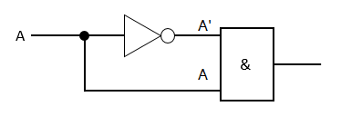
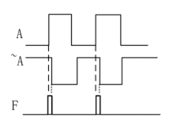
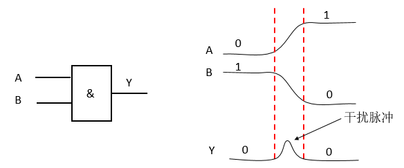
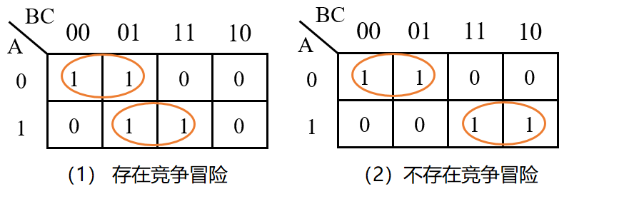
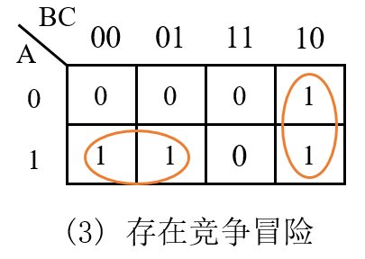
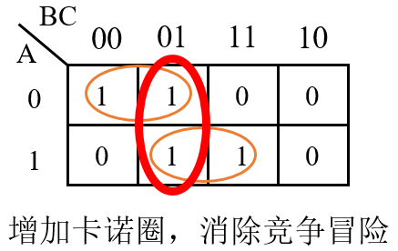
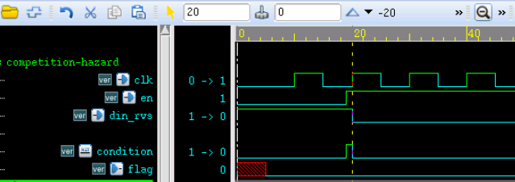
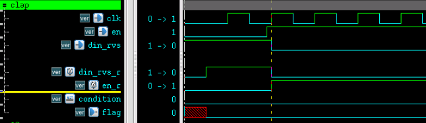

キーワード：競争，ハザード，コーディング規約
発生原因
デジタル回路では、信号伝送と状態遷移には常に一定の遅延がある。
- 組み合わせ論理回路において、異なる経路の入力信号変化が同じゲート回路の点に伝達される際、時間的に早い遅いが生じる。この前後によって生じる時間差を競争（Competition）と呼ぶ。
- 競争が存在するため、出力信号は期待する状態に達するまでに一定の時間が必要であり、遷移期間中に瞬間的な誤出力（例えばスパイクパルス）が発生する可能性がある。この現象をハザード（Hazard）と呼ぶ。
- 競争があっても必ずしもハザードが発生するわけではないが、ハザードが発生する場合には必ず競争が存在する。 例えば、与えられた論理F = A & A'、回路は左下図のようになる。
インバータ回路が存在するため、信号A'がANDゲートの入力端に伝達される時間は、信号Aに比べて遅れるため、ANDゲートの最終的な出力結果Fに妨害パルスが現れる可能性がある。右下図のようになる。


実際のハードウェア回路では、ゲート回路の各入力端の遅延が異なるだけで、競争とハザードが発生する可能性がある。
例えば、単純なANDゲートでも、入力信号源が必ずしも同じ信号の変換から来るとは限らず、ハードウェアプロセスや他の遅延回路の存在により、競争とハザードが発生する可能性がある。下図のようになる。

判断方法
代数法
論理式において、1つの変数を固定したまま、残りの他の変数を0または1で置き換える。最終的に論理式が次の形に簡約できる場合、
Y = A + A'
或
Y = A · A'
の形になれば、この論理には競争とハザードが存在すると判定できる。
例えば論理式Y = AB + A'C、B=C=1の場合、次のように簡約できる。Y = A + A'。明らかに、A状態の変化は、回路に競争とハザードが存在することを引き起こす。
カルノー図法
2つの接するカルノーグループがあり、その接する箇所が他のカルノーグループで囲まれていない場合、競争とハザード現象が発生する可能性がある。
例えば左下図には競争とハザードが存在し、右下図には存在しない。

実際、カルノー図は本質的に論理式の分析であり、直感的な判断が可能になるだけである。
例えば、左上図の論理式は次のように簡約できる。Y = A'B' + AC、B=0 且 C=1のとき、この論理式は次のようにも表せる。Y = A' + A。したがって、確実に競争とハザードが存在する。
右上図の論理式は次のように簡約できる。Y = A'B' + AB、明らかにBが1であっても0、この式は決して次の形には簡約されない。Y = A' + A。したがって、この論理には競争とハザードは存在しない。
注意すべき点として、カルノー図は端と端が隣接している。下図のように、2つのカルノーグループが接しているように見えなくても、実際にはm6とm4も隣接しているため、下のカルノー図が表すデジタル論理でも競争とハザードが発生する。

その他、より複雑な場合は、「コンピュータ支援解析＋実験」の方法を用いる必要があるかもしれない。
除去方法
デジタル回路において、競争とハザードを回避する一般的な方法は主に4つある。
1）フィルタコンデンサを追加し、狭いパルスを除去する
この方法では、出力端に小さなコンデンサを並列接続し、スパイクパルスの振幅をゲート回路のしきい値以下に弱める必要がある。
この方法は簡単であるが、出力電圧の反転時間が増加し、波形を壊しやすい。
2）ロジックを変更し、冗長項を追加する
カルノー図を利用して、接している2つのグループの間に別のカルノーグループを追加し、それを論理式に加える。
下図のように、デジタル論理Y = A'B' + ACに冗長項B'Cを追加すると、この回路の論理は次のように表せる。Y = A'B' + AC + B'C。このとき、回路には競争とハザードが存在しなくなる。

3）クロック同期回路を使用し、フリップフロップを利用して遅延させる
同期回路の信号変化はすべてクロックエッジで発生する。フリップフロップのD入力端子では、グリッチがクロックの立ち上がりエッジに現れず、データのセットアップ時間とホールド時間を満たさなければ、システムに害を及ぼすことはない。したがって、DフリップフロップのD入力端子はグリッチに鈍感であると見なせる。 この特性を利用し、クロックエッジ駆動下で組み合わせ論理信号をフリップフロップで遅延させることで、競争とハザードを除去できる。
クロックを1周期遅延させると、ある程度の確率で競争とハザードの発生を減らせる。実験によると、最も安全な遅延周期は3周期であり、競争とハザードの発生を効果的に減らすことができる。
もちろん、最終的には自分の設計要件に応じて、信号を適切に遅延させる必要がある。
信号を遅延させることが競争とハザードを除去できることを説明するために、以下のコードモデルを構築する。
例
(
input clk ,
input rstn ,
input en ,
input din_rvs ,
output reg flag
);
wire condition = din_rvs & en ; //combination logic
always @(posedge clk or negedge !rstn) begin
if (!rstn) begin
flag <= 1'b0 ;
end
else begin
flag <= condition ;
end
end
endmodule
testbench の記述は以下のとおり：
例
module test ;
reg clk, rstn ;
reg en ;
reg din_rvs ;
wire flag_safe, flag_dgs ;
//clock and rstn generating
initial begin
rstn = 1'b0 ;
clk = 1'b0 ;
#5 rstn = 1'b1 ;
forever begin
#5 clk = ~clk ;
end
end
initial begin
en = 1'b0 ;
din_rvs = 1'b1 ;
#19 ; en = 1'b1 ;
#1 ; din_rvs = 1'b0 ;
end
competition_hazard u_dgs
(
.clk (clk ),
.rstn (rstn ),
.en (en ),
.din_rvs (din_rvs ),
.flag (flag_dgs ));
initial begin
forever begin
#100;
if ($time >= 1000) $finish ;
end
end
endmodule // test
シミュレーション結果は以下のとおり：
図からわかるように、信号 condition にスパイクパルスが現れている。これは、信号 din_rvs と信号 en がモジュール内部クロックに対して非同期であるため、内部のゲート回路に到達する際の遅延が異なり、競争とハザードを引き起こす可能性があるためである。
最終的なシミュレーション結果では flag が常に0であり、望ましい結果のように見える。しかし実際の回路では、このスパイクパルスが時間的にクロックエッジに非常に近いため、クロックにサンプリングされて誤った結果を生じる可能性がある。

次に、モデルを改良して、遅延のロジックを追加する。次のとおり：
例
(
input clk ,
input rstn ,
input en ,
input din_rvs ,
output reg flag
);
reg din_rvs_r ;
reg en_r ;
always @(posedge clk or !rstn) begin
if (!rstn) begin
din_rvs_r <= 1'b0 ;
en_r <= 1'b0 ;
end
else begin
din_rvs_r <= din_rvs ;
en_r <= en ;
end
end
wire condition = din_rvs_r & en_r ;
always @(posedge clk or negedge !rstn) begin
if (!rstn) begin
flag <= 1'b0 ;
end
else begin
flag <= condition ;
end
end // always @ (posedge clk or negedge !rstn)
endmodule
このモジュールを上述の testbench にインスタンス化すると、以下のシミュレーション結果が得られる。
図からわかるように、信号 condition にはスパイクパルスの妨害がなくなり、シミュレーション結果の flag が0であることも期待どおりである。
実際、入力信号がクロックエッジに非常に近い場合、クロックによる入力信号のサンプリングにも不確実性が存在するが、スパイクパルス現象は発生しない。入力信号をさらに2周期遅延させることは、より良い処理方法であり、競争とハザードに対してより良い抑制効果がある。

4）グレイコードカウンタを採用する
インクリメントするマルチビットカウンタでは、カウント値が複数のビットで同時に変化することがある。
例えば、カウンタ変数 counter が5から6にカウントするとき、対応する2進数は 4'b101 から 4'b110 への変換である。各ビットのデータ遅延のため、counter の変化過程は次のようになる可能性がある：4'b101 -> 4'b111 -> 4'b110。もし以下のような論理記述があれば、信号 cout に短いスパイクパルスが現れる可能性があり、これは明らかに設計と矛盾する。
cout = counter[3:0] == 4'd7 ;
一方、グレイコードカウンタでは、カウント時に隣接する数の間で1つのデータビットだけが変化するため、競争とハザードを効果的に回避できる。
幸い、Verilog設計では、カウンタのほとんどは同期設計である。カウント時に複数のビットが同時に反転する可能性があっても、クロック駆動のフリップフロップの作用により、信号間のタイミング要件を満たしていれば、競争とハザードを100%除去できる。
まとめ
一般的に、競争とハザードを除去するためのフィルタコンデンサの追加や論理冗長は、Verilog設計で考慮されるものではない。
カウントにグレイコードカウンタを使用するのは、主に高速クロック下で信号遷移率を減らして消費電力を下げる場面に適用される。
クロック同期回路でフリップフロップを利用して非同期信号を遅延させることは、Verilog設計でよく使われる方法である。
これ以外にも、競争とハザードを除去するために、Verilogコーディング時にはいくつかの注意点がある。詳細は次の節を参照。
Verilog コーディング規約
プログラミング時に以下の点に注意すれば、ほとんどの競争とハザードの問題を回避できる。
- 1）順序回路をモデリングするときは、ノンブロッキング代入を使用する。
- 2）組み合わせ論理をモデリングするときは、ブロッキング代入を使用する。
- 3）同じ always ブロック内で順序回路と組み合わせ論理のモデルを構築するときは、ノンブロッキング代入を使用する。
- 4）同じ always ブロック内でブロッキング代入とノンブロッキング代入の両方を使用しない。
- 5）複数の always ブロックで同じ変数に代入しない。
- 6）ラッチの発生を避ける。
以下、上記の注意事項を一つずつ分析する。
1）順序回路をモデリングするときは、ノンブロッキング代入を使用する
非ブロッキング代入の説明で前述したように、順序回路では非ブロッキング代入によりレースハザードを排除できます。
例えば、以下のコードで説明されているように、aとbのブロッキング代入の操作順序を確定できないため、レースハザードが発生する可能性があります。
always @(posedge clk) begin
a = b ;
b = a ;
end
一方、非ブロッキング代入を使用する場合は、代入操作が同時に行われるため、レースハザードは発生しません。以下のコードで説明されているとおりです。
always @(posedge clk) begin
a <= b ;
b <= a ;
end
2）組み合わせ論理をモデリングするときは、ブロッキング代入を使用する
例えば、C = A&B、F=C&Dの組み合わせ論理機能を実装したい場合、非ブロッキング代入文を使用すると次のようになります。2つの代入文が同時に代入されるため、F <= C & D では信号Cの旧値が使用されます。したがって、この時点の論理は誤りとなり、Fの論理値はA&B&Dと等しくなりません。
さらに、このとき信号Cには記憶機能が要求されますが、クロック駆動ではないため、Cはラッチ（latch）に合成される可能性があり、レースハザードを引き起こします。
always @(*) begin
C <= A & B ;
F <= C & D ;
end
コードを次のように修正します。F = C & D の操作は必ず C = A & B の後に行われます。このときFの論理値はA&B&Dと等しくなり、設計に適合します。
always @(*) begin
C = A & B ;
F = C & D ;
end
3）同じ always ブロック内で順序回路と組み合わせ論理のモデルを構築するときは、ノンブロッキング代入を使用する
順序回路には組み合わせ論理が含まれることもありますが、代入操作に非ブロッキング代入を使用すると、規則1で述べたような類似の問題が依然として発生します。
例えば、クロック駆動でANDゲートの論理機能を実現する場合、コードは以下のとおりです。
例
if (!rst_n) begin
q <= 1'b0;
end
else begin
q <= a & b; //組み合わせ論理があっても、q = a & b のように書かないでください
end
end
4）同じ always ブロック内でブロッキング代入とノンブロッキング代入の両方を使用しない
alwaysブロック内の組み合わせ論理において、ブロッキング代入と非ブロッキング代入の両方がある場合、予期しない結果を引き起こします。以下のコードで説明されているとおりです。
このとき、信号Cのブロッキング代入が完了した後で、信号Fが非ブロッキング代入されるため、シミュレーション結果は正しい可能性があります。
ただし、F信号に他の負荷がある場合、Fの最新値はすぐに伝達されず、データの有効時間は依然として次のトリガ時点になります。このとき、Fには記憶機能が要求されるため、ラッチに合成される可能性があり、レースハザードを引き起こします。
always @(*) begin
C = A & B ;
F <= C & D ;
end
以下のコードで説明されているように、シミュレーションの観点では、信号Cは非ブロッキング代入され、次のトリガ時点で有効になります。一方、F = C & D はブロッキング代入ですが、信号Cはブロッキング代入ではないため、Fの論理では依然としてCの旧値が使用されます。
always @(*) begin
C <= A & B ;
F = C & D ;
end次に、順序回路内にブロッキング代入と非ブロッキング代入の両方があるとどうなるかを分析します。コードは以下のとおりです。
リセット端子がクロックと同期している場合、リセットによって信号qが0になるのは、次のクロックサイクルで有効になります。
一方、信号aまたはbによってqが0になる場合は、現在のクロックサイクル内で有効です。
qに他の負荷がある場合、qのタイミングが著しく乱れ、明らかに設計要件を満たしません。
例
if (!rst_n) begin //リセットはクロックと同期していると仮定します
q <= 1'b0;
end
else begin
q = a & b;
end
end
なお、多くのコンパイラがこの記述方法をサポートしており、上記の分析もすべてシミュレーションの観点に基づいています。実際には、ブロッキング代入と非ブロッキング代入を混在させて記述すると、合成後の回路のタイミングが乱れ、解析やデバッグに不利になります。
5）複数の always ブロックで同じ変数に代入しない
C言語とは異なり、Verilogでは複数のalwaysブロックで同じ変数に代入することは許可されていません。この場合、信号は複数のドライバ（Multiple Driver）を持つことになり、これは禁止されています。もちろん、assign文を使用して同じ変数に対して複数回の連続代入を行うことも許可されていません。 信号の観点から言うと、複数ドライバの場合、同じ信号変数が非常に短い時間内に複数回異なる代入結果を受けると、レースハザードが発生する可能性があります。
構文の観点から言うと、多くのコンパイラは複数ドライバを検出するとErrorを報告します。
6）ラッチの発生を避ける
具体的な分析は次の章を参照してください：『ラッチの回避』。